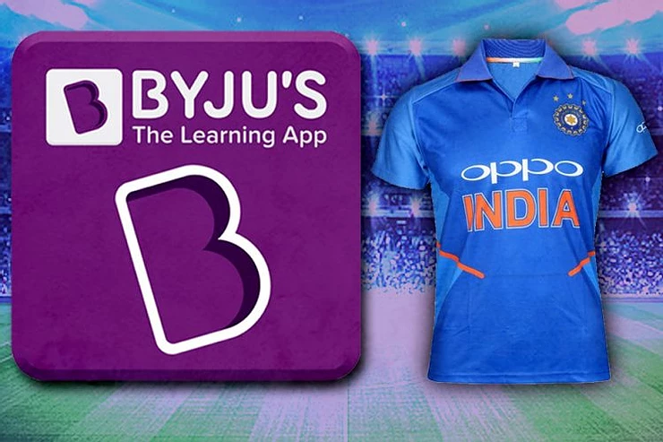

It was all over the business news, on social media and in any platforms where marketing could be critiqued. I have read both the sides of the arguments with a pre-judged notion in my mind, and I'm pointing out some of the versions of my ideas telling me that Byju's indeed did a good marketing game. Here are them:

1) My strong point here is
credibility
. I'll be explaining how Byju's could get strong credibility points &
why it could be crucial for their type of business through the following
points.
2)
Reach
: An estimated 400 million watch cricket on television in India, which
is almost impossible to replicate through any other media.
3)
Target Group:
I don't think students are the real target group here, I'd say parents
of school going students are their real customers. To reach them, Indian
Cricket jersey is a good choice.
4)
Method of sales
: From my research, Byju's initially generate leads through various
platform such as Whatsapp and other online and offline medias and then
proceed to cold calling the target group. And since our target group is
parents, they would get turned down if they haven't heard of the brand
from a trusted source which India Team jersey can provide unlike social
media platforms where fake contents are being heavily criticised.
5)
Penetration
: Moving to capture an even bigger market, Biju's need to penetrate into
tier 2 Indian cities rather than just moving about only in metropolitan
cities. Cricket has the unique feature of equally penetrating almost all
sectors of the population.
6)
Exclusivity
: This is one of the biggest reasons why I support Byju's for their
decision. Unlike paying online influencers or promoting through online
platforms, there is only one brand name that will have a spot in front
of team India's jersey. It itself enhances the trust factor for the
brand.
7)
Familiarity
: The starting paid scheme of Byju's is around 30k Rupees. Any tier 2
city parent who would consider buying this package for their child must
be familiar about the app & brand. Doing a 3 year branding on Indian
Team jersey can exponentially increase familiarity with no doubt.
Although I couldn't find the exact amount for the sponsorship, comparing
it with OPPO's previous costing of
1079 Crore Rupees
, It is one hell of a deal and if it doesn't hit the point as I think it
would, It would do some great damage to the startup.
 +91 77366 95526
+91 77366 95526
 contact@blusteak.com
contact@blusteak.com